Ideas
|
1. Linear Regression
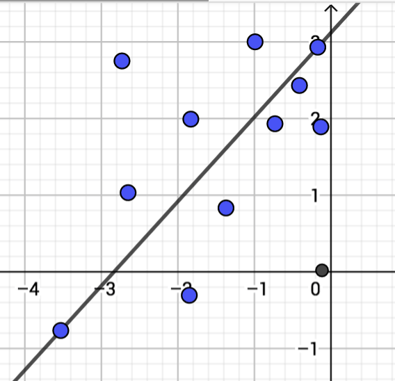 |
extensions [ graph ] graph:create-graph ;; Save current state of points. set saved-graph graph:get-points ;; returns points ;; Grab points from someone else. set new-points gbcc:get-from-user "my-points" ;; returns points ;; Add points in to your environment. graph:create-points new-points ;; Something about including new points to linear regression. |
|
2. Same Area
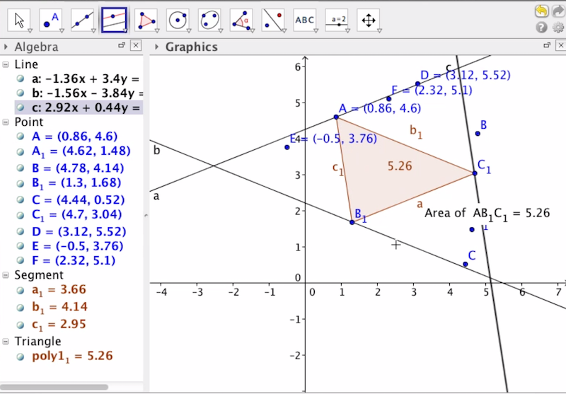 |
extensions [ graph ] graph:show-graph ;; Save current state of points. set saved-graph graph:get-points ;; returns points ;; Grab points from someone else. set new-points gbcc:get-from-user "my-points" ;; returns points ;; Add points in to your environment. graph:create-points new-points |
|
3. Same Perimeter
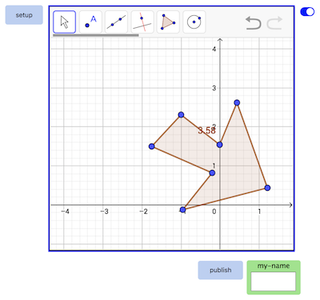 |
extensions [ graph ] graph:show-graph ;; Save current state of environment, locally. set saved-xml graph:export ;; Grab xml from someone else, by clicking on gallery. set new-xml gbcc:get-from-user "my-xml" ;; Replace old environment with new environment. graph:import new-xml ;; Change environment with Gui ;; Save new environment, where other users can access it. gbcc:set "my-xml" graph:export ;; Share screenshot. gbcc:broadcast-view"" |
|
4. Operations on Functions
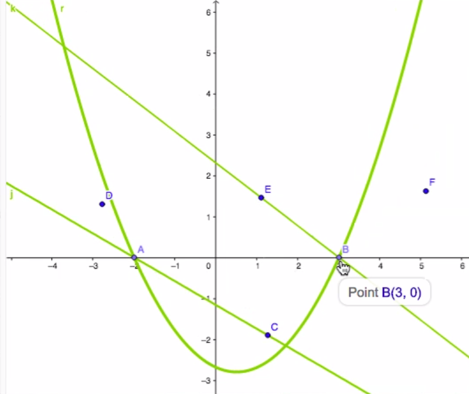 |
extensions [ graph ] graph:show-graph ;; Save objects, locally. set saved-objects graph:get-objects ;; Grab objects from someone else, by clicking on gallery. set new-objects gbcc:get-from-user user-id "my-objects" ;; Add new objects. graph:create-objects new-objects ;; Change environment with Gui ;; Save new environment, where other users can access it. gbcc:set "my-objects" graph:get-objects ;; Share screenshot. gbcc:broadcast-view"" |
|
5. Triangle Animation Ants
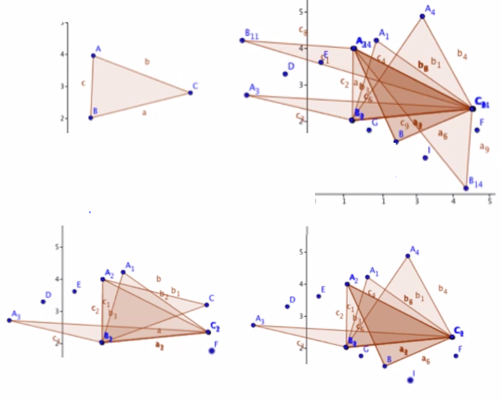 |
extensions [ graph ] graph:show-graph ;; Create a turtle that controls a point. create-turtles 1 [ set user-name (word "carolyn" who) graph:create-point user-name [ graph:patch-to-graph [ xcor ycor ] ] set my-turtle-id who ] ;; Connect your point to the two other endpoints, to form a triangle. graph:eval-command... ;; Move the turtle around, and watch the triangle change, too. ask turtle my-turtle-id [ graph:set-xy user-name [ graph:patch-to-graph [] xcor ycor ] ] ] ;; Get data from others. ;; to gbcc-on-select [ user-id ] [ ;;create turtle and point and programatically make triangle...] ;; to gbcc-on-deselect [ user-id ] [ ;;remove turtle and point...] ;; to gbcc-on-forever-go [ user-id ] [ ;;move turtle and point ] ;; Version 1: Share each step, with others. ;; Version 2: Share each stamp, with others. ;; Version 3: Teacher saves stamps, replays action. |
Maps Extension
LeafletJS http://leafletjs.com/
GeoJson https://leafletjs.com/examples/geojson/
Maps Extension
extensions [ graph ]
|
|
| 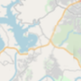 |
MAP ✓ maps:show-map ✓ maps:hide-map ✓ maps:bring-to-front ✓ maps:send-to-back ✓ maps:set-map-offset [ left top width height ] ✓ show maps:get-map-offset ;; returns [ left top width height ] ✓ maps:set-opacity 0.5 ✓ show maps:get-opacity ;; returns any number between 0 and 1 ✓ show maps:mouse-on *** new *** ✓ show maps:mouse-off *** new *** ✓ maps:set-all "long-string-of-json" ✓ show maps:get-all ;; returns "long-string-of-json" |
MAP SETTINGS ✓ maps:set-zoom 3 ✓ show maps:get-zoom ;; returns 3 ✓ maps:set-center-latlng [ 30 97 ] ✓ show maps:get-center-latlng ;; returns [ 30 97 ] |
|
| 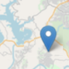 |
MARKERS ✓ maps:create-marker "marker-1" [ 0 0 ] ✓ maps:create-markers [ [ "marker-1" [ 0 0 ] ] [ "marker-2"[ 0 0 ] ] ] ✓ show maps:get-marker ;; [ "marker-1" [ 0 0 ] ] ✓ show maps:get-markers ;; [ [ "marker-1" [ 0 0 ] ] [ "marker-2" [ 0 0 ] ] ] ✓ maps:delete-marker "marker-1" ✓ maps:delete-markers ✓ maps:set-lat "marker-1" 30 ✓ maps:set-lng "marker-1" 97 ✓ maps:set-latlng "marker-1" [ 30 97 ] ✓ show maps:get-lat "marker-1" ;; returns 30 ✓ show maps:get-lng "marker-1" ;; returns 97 ✓ show maps:get-latlng "marker-1" ;; returns [ 30 97 ] ✓ maps:set-draggable "marker-1" true *** new *** ✓ show maps:get-draggable "marker-1" ;; returns true *** new *** ✓ maps:update-my-latlng *** new *** ✓ show maps:get-my-latlng ;; returns [ 30 97 ] *** new *** |
| 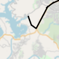 |
PATHS ✓ maps:create-path "path-1" [ 0 0 ] ✓ maps:create-paths [ [ "path-1" [ 0 0 ] ] [ "marker-2"[ 0 0 ] ] ] ✓ maps:delete-path "path-1" ✓ maps:delete-paths ✓ maps:set-path-color "path-1" "#555555" ✓ show maps:get-path-color "path-1" ;; returns "#555555" ✓ maps:set-path-vertices "path-1" [ [ 30 60 ] [ 31 59 ] [ 39 59 ] ] ✓ show maps:get-path-vertices "path-1" ;; returns [ [ 30 60 ] [ 31 59 ] [ 39 59 ] ] |
| 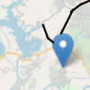 |
OBJECTS (Including Markers and Paths) ✓ set new-object maps:get-object "path-1" ;; returns a list with a name and definition ✓ maps:create-object new-object ✓ set new-objectsmaps:get-objects ;; returns list of names and definitions of objects, in order of creation ✓ maps:create-objects new-objects ✓ maps:delete-object "path-1" ✓ maps:delete-objects ✓ show maps:object-exists "path-1" ;; returns boolean ✓ maps:hide-object "path-1" ✓ maps:show-object "path-1" |
| 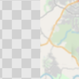 |
TRANSLATION between Patch Coordinates and Latitude / Latitude ✓ show maps:latlng-to-patch [ 30 -97 ] ;; returns latitude and longitude ✓ show maps:patch-to-latlng [ 0 0 ] ;; returns patch coordinates ✓ maps:update-map ;; upon changing center or zoom of map, sync lat-lng and patch coords |
Physics Extension
Box2DWeb Library. https://github.com/hecht-software/box2dwebDocumentation. https://github.com/hecht-software/box2dweb
Physics UI https://remmler.org/gbcc/v3/video.html
NetLogo/Physics Example: Import a world with friction, gravity, wrapping, linear impulses and angular impulses. The world can contain moving shapes, static shapes, joints and targets, any of which can be represented by turtles.
Objects in a Box2D Physics World
| 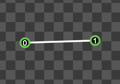 |
A line has two endpoints and is a member of a body. A line has friction, density and restitution. A line can be defined with an absolute position, or with a position relative to a body. |
| 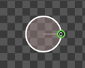 |
A circle has a center and a radius and is a member of a body. A circle has friction, density and restitution. A circle can be defined with an absolute position, or with a position relative to a body. |
| 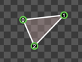 |
A polygon has vertices and is a member of a body. A polygon has friction, density and restitution. A polygon can be defined with an absolute position, or with a position relative to a body. |
| 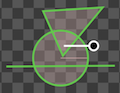 |
A body can be comprised of shapes such as lines, circles and polygons. A body can be rotated around it's center. A body has linear and angular velocity. A body is defined with an absolute position. Bodies can be dynamic (move and collide) or be static (only collide) or be a ghosts (only move). |
| 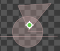 |
A target is a location on a body, to which forces can be applied. |
Physics Extension
extensions [ physics ]
|
||
WORLD ✓ physics:show-world ✓ physics:hide-world ✓ graph:show-toolbar ✓ graph:hide-toolbar physics:bring-to-front physics:send-to-back physics:set-world-offset [ left top width height ] show physics:get-world-offset ;; returns [ left top width height ] physics:set-opacity 0.5 show physics:get-opacity ;; returns any number between 0 and 1 ✓ physics:set-all "long-string-of-json" ✓ show physics:get-all ;; returns "long-string-of-json" physics:reset-ticks ✓ physics:tick ✓ <show physics:get-tick ;; returns list of collisions since last tick ✓ physics:repaint |
||
;; WORLD SETTINGS ✓ physics:set-gravity-xy [ false true ] ✓ show physics:get-gravity-xy ;; returns [ false true ] ✓ physics:set-wrap-xy [ true true ] ;; ✓ show physics:get-wrap-xy ;; returns [ true true ] physics:set-time-step 1 / 20 ;; length of time passed to simulate (seconds) show physics:get-time-step ;; returns 1 / 20 physics:set-velocity-iterations 8 / 20 ;; how strongly to correct velocity show physics:get-velocity-iterations ;; returns 8 physics:set-position-iterations 31 / 20 ;; how strongly to correct position show physics:get-position-iterations ;; returns 3 |
||
;; LINES
✓ physics:create-line "line-1" "body-1" ;; create a line attached to a body
✓ physics:set-line-relative-endpoints "line-1" [ 0 0 ] [ 2 2 ] ;; name of line, coords of endpoints relative to center of mass of body
✓ physics:set-line-endpoints "line-1" [ 10 10 ] [ 5 5 ] ;; name of line, absolute coords of endpoints
✓ show physics:get-line-relative-endpoints "line-1"
✓ show physics:get-line-endpoints "line-1"
;; CIRCLES
✓ physics:create-circle "circle-1" "body-1" ;; create a circle attached to a body
✓ physics:set-circle-radius "circle-1" 4 ;; name of circle, radius
✓ physics:set-circle-relative-center "circle-1" [ 0 0 ] ;; name of circle, coords of center of circle, relative to center of mass of body
✓ physics:set-circle-center "circle-1" [ 10 10 ] ;; name of circle, absolute coords of center of circle
✓ show physics:get-circle-radius "circle-1"
✓ show physics:get-circle-relative-center "circle-1"
✓ show physics:get-circle-center "circle-1"
;; RECTANGLES
✓ physics:create-rectangle "rectangle-1" "body-1" ;; create a rectangle attached to a body
✓ physics:set-rectangle-relative-corners "rectangle-1" [ [ 10 10 ] [ 5 5 ] ] ;; name of rectangle, coords of corners of rectangle
✓ physics:set-rectangle-corners "polygon-1" [ [ 10 10 ] [ 5 5 ] ] ;; name of rectangle, coords of corners of rectangle
✓ show physics:get-rectangle-relative-corners "rectangle-1"
✓ show physics:get-rectangle-corners "rectangle-1"
✓ physics:set-rectangle-corners "polygon-1" [ [ 10 10 ] [ 5 5 ] ] ;; name of rectangle, coords of corners of rectangle
✓ show physics:set-rectangle-patch "rectangle-1" [ 0 0 ]
✓ show physics:get-rectangle-patch "rectangle-1";; name of rectangle, patch coords
;; POLYGONS ;; SHAPES
;; BODIES
✓ physics:set-behavior "body-1" "dynamic" ;; static (doesn't move, does collide), dynamic (does move and collide), ghost (does move, doesn't collide)
✓ physics:set-body-xy "body-1" [ 0 0 ]
✓ physics:set-angle "body-1" 180 ;; degrees
✓ physics:set-linear-velocity "body-1" [ 0 0 ] ;; vector
✓ physics:set-angular-velocity "body-1" 180 ;; angle in degrees
✓ show physics:get-behavior "body-1"
✓ show physics:get-body-xy "body-1"
✓ show physics:get-angle "body-1"
✓ show physics:get-linear-velocity "body-1"
✓ show physics:get-angular-velocity "body-1"
;; TARGETS
✓ physics:create-target "target-1" "body-1"
✓ physics:set-target-relative-xy "target-1" [ 0 0 ] ;; name of target, coords relative to center of mass of body
✓ physics:set-target-xy "target-1" [ 10 10 ] ;; name of target, absolute coords
✓ show physics:get-target-relative-xy "target-1"
✓ show physics:get-target-xy "target-1"
✓ physics:delete-target "target-1"
✓ physics:delete-targets
;; OBJECTS ;; SHAPES AND BODIES |
||
;; APPLY FORCE AT TARGET ✓ physics:apply-force "target-1" 10 180 ;; applies with force of 10 and angle of 180 degrees ✓ physics:apply-force-relative-angle "target-1" 10 20 ;; applies with force of 10 and relative angle of 20 degrees ✓ physics:apply-linear-impulse "target-1" 10 180 ;; applies with force of 10 and angle of 180 degrees ✓ physics:apply-linear-impulse-relative-angle "target-1" 10 20 ;; applies with force of 10 and relative angle of 20 degrees ✓ physics:apply-torque "target-1" 10 ;; applies with force of 10 ✓ physics:apply-angular-impulse "target-1" 10 ;; applies with force of 10 |
||
;; Connections between Turtles and Objects ✓ physics:connect-who-to-object who object-id ✓ show physics:get-connected;; get list of pairs of turtle ids to object ids ✓ physics:disconnect-who who |

Ideas
|
1. Apply a force to each bristlebot
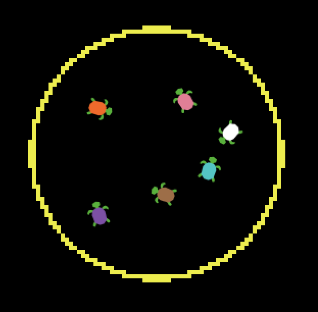 |
extensions [ physics ] create-turtles 6 [ set shape "turtle" ;; create a circle, and make it belong to a body physics:create-circle (word "circle- who) (word "body-" who ) ;; place the body, somewhere physics:set-body-xy ("body-1" [ xcor ycor ] physics:set-circle-relative-xy (word "circle-" who) [ 0 0 ] physics:set-radius (word "circle-" who) 2 ;; create a target at the center of a body physics:create-target (word "target-" who) (word "body-" who) physics:set-target-relative-xy (word "target-" who) [ 0 0 ] ;; connect the turtle to the body to which the circle and target belong physics:connect-who-to-object who (word "body-" who ) ] ask turtles [ ;; apply a force of 10, to a target on a body, at a relative angle of 90 degrees physics:apply-force-relative-angle (word "target-" who) 10 90 ] |
|
2. Apply a linear force (white arrow)
to a Pokemon card 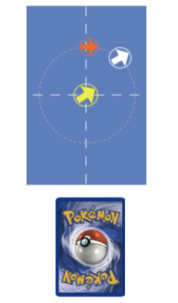 |
extensions [ physics ] ;; create a polygon, and make it belong to a body physics:create-polygon "rectangle-1" "body-1" physics:set-polygon-vertices [ [ 0 0 ] [ -4 0 ] [ -4 4 ] [ 0 4 ] ] ;; create a rectanglular turtle and connect it to the body create-turtles 1 [ set shape "rectangle" physics:connect-who-to-object who body-1 ] ;; create a target, offset from the center of a body physics:create-target "target-white" "body-1" physics:set-target-relative-xy "target-white" [ 2 2 ] ;; create an arrow shaped turtle and connect it to the target create-turtles 1 [ set shape "arrow" physics:connect-who-to-object who "target-white" ] ;; apply a force of 10, to a target on a body, at a relative angle of 35 degrees physics:apply-force-relative-angle "target-white" 10 35 |
|
3. Apply a linear force (yellow arrow)
and an angular force (red arrow) 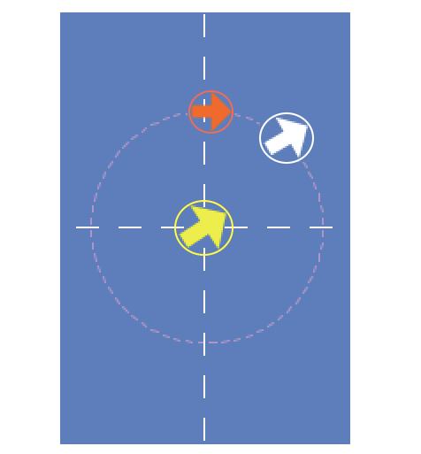 |
;; apply a linear impulse of 12, at a relative angle of -30 degrees physics:apply-linear-impulse-relative-angle "target-yellow" 12 -30 ;; apply an angular impulse of 20 physics:apply-angular-impulse "target-red" 10 |
|
4. In ideas 2 and 3, above,
something else needs to be happening to make two touch become one touch. |
Image Extension
Image Extension
extensions [ image ]
Commands
image:clear ✓ image:zoom 3 ;; zooms so that there are 3 patches from an edge to the center patch ✓ image:reset-zoom image:import "cats.png";; imports an image file, local to the app image:import-from-user user-id;; imports the topmost view, plot or avatar displayed on a user's canvas